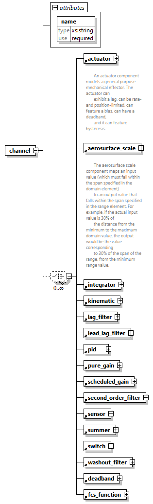

| diagram |  | ||||||||||||
| properties |
|
||||||||||||
| children | actuator aerosurface_scale integrator kinematic lag_filter lead_lag_filter pid pure_gain scheduled_gain second_order_filter sensor summer switch washout_filter deadband fcs_function | ||||||||||||
| used by |
|
||||||||||||
| attributes |
|
||||||||||||
| source | <xs:element name="channel"> <xs:complexType> <xs:choice minOccurs="0" maxOccurs="unbounded"> <xs:element ref="actuator"/> <xs:element ref="aerosurface_scale"/> <xs:element ref="integrator"/> <xs:element ref="kinematic"/> <xs:element ref="lag_filter"/> <xs:element ref="lead_lag_filter"/> <xs:element ref="pid"/> <xs:element ref="pure_gain"/> <xs:element ref="scheduled_gain"/> <xs:element ref="second_order_filter"/> <xs:element ref="sensor"/> <xs:element ref="summer"/> <xs:element ref="switch"/> <xs:element ref="washout_filter"/> <xs:element ref="deadband"/> <xs:element ref="fcs_function"/> </xs:choice> <xs:attribute name="name" type="xs:string" use="required"/> </xs:complexType> </xs:element> |
| type | xs:string | ||
| properties |
|
||
| source | <xs:attribute name="name" type="xs:string" use="required"/> |